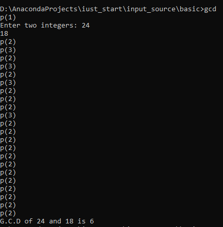

Program instrumentation
Edition 1 (July 19, 2020)
In this tutorial we describe a primary task in source code transformation, i.e., program instrumentation, which is one of the CodA features.
The task can be performed by properly applying compiler techniques, adding required code snippets at specific source code places. Instrumentation is the fundamental prerequisite for almost all dynamic analysis types. Let us begin with a simple case in which the purpose of instrumentation is to log the executed path of the program control flow graph for each execution. Consider the following C++ program used to calculate the greatest common divider (GCD) of two integers:
#include <stdio.h>
#include <iostream>
int main()
{
int num1, num2, i, gcd;
std::cout << "Enter two integers: ";
std::cin >> num1 >> num2;
for(i=1; i <= num1 && i <= num2; ++i)
{
// Checks if i is factor of both integers
if(num1%i==0 && num2%i==0)
gcd = i;
}
std::cout << "G.C.D is " << gcd << std::endl;
return 0;
}
Figure 1. Source code of GCD program.
Appropriate instrumentation will put a log statement at the beginning of each basic block. For simplicity, we add a print statement to write the number of the executed basic block in the console. In the GCD program, lines 6, 10, 13 shows the starting point of basic blocks. Therefore, the instrumented version of the GCD program is similar to the following code, in which print statement has been added manually:
#include <stdio.h>
#include <iostream>
#include <fstream>
std::ofstream logFile("log_file.txt");
int main()
{
logFile << "p1" << std::endl;
int num1, num2, i, gcd;
std::cout << "Enter two integers: ";
std::cin >> num1 >> num2;
for(i=1; i <= num1 && i <= num2; ++i)
{
logFile << "p2" << std::endl;
// Checks if i is factor of both integers
if(num1%i==0 && num2%i==0)
{
logFile << "p3" << std::endl;
gcd=i;
}
//continue;
}
std::cout << "G.C.D is " << gcd << std::endl;
//return 0;
logFile << "p4" << std::endl;
}
Figure 2. Source code of GCD program after instrumenting.
One can see the cout statements added in lines 6, 12, 15, i.e., at the beginning of each basic block. For large programs, it is impossible to add such statements manually. To perform this instrumentation by ANTLR, we just need to identify conditional statements, including if statements, loop statements, and switch-case statements. Besides, the beginning of each function should be recognized. ANTLR provides a listener interface that consists of an enter method and exit method for each nonterminal in target language grammar. The listener can be passed to the parse tree walker used for traversing the parse tree in DFS . For instrumenting, we must implement the methods of listener interface related to conditional rules. The implementation of the listener interface in Python is shown in the following:
class InstrumentationListener(CPP14Listener):
def __init__(self, tokenized_source_code: CommonTokenStream):
self.branch_number = 0
if tokenized_source_code is not None:
# Move all the tokens in the source code in a buffer, token_stream_rewriter.
self.token_stream_rewriter = TokenStreamRewriter.TokenStreamRewriter(tokenized_source_code)
else:
raise Exception(‘common_token_stream is None’)
# Creating and open a text file for logging the instrumentation result at beging of the program
def enterTranslationunit(self, ctx: CPP14Parser.TranslationunitContext):
new_code = '\n #include <fstream> \n std::ofstream logFile("log_file.txt"); \n'
self.token_stream_rewriter.insertAfter(ctx.start.tokenIndex, new_code)
# DFS traversal of a statement subtree, rooted at ctx and if the statement is a branching condition
# insert a prob.
def enterStatement(self, ctx: CPP14Parser.StatementContext):
if isinstance(ctx.parentCtx, (CPP14Parser.SelectionstatementContext,
CPP14Parser.IterationstatementContext)):
# if there is a compound statement after the branchning condition:
if isinstance(ctx.children[0], CPP14Parser.CompoundstatementContext):
self.branch_number += 1
new_code = '\n logFile << "p' + str(self.branch_number) + '" << endl; \n'
self.token_stream_rewriter.insertAfter(ctx.start.tokenIndex, new_code)
# if there is only one statement after the branchning condition then create a block.
elif not isinstance(ctx.children[0],
(CPP14Parser.SelectionstatementContext, CPP14Parser.IterationstatementContext)):
self.branch_number += 1
new_code = '{'
new_code += '\n logFile << "p' + str(self.branch_number) + '" << endl; \n'
new_code += ctx.getText()
new_code += '\n}'
self.token_stream_rewriter.replaceRange(ctx.start.tokenIndex, ctx.stop.tokenIndex, new_code)
def enterFunctionbody(self, ctx: CPP14Parser.FunctionbodyContext):
self.branch_number += 1
new_code = '\n logFile << "p' + str(self.branch_number) + '" << endl;\n'
self.token_stream_rewriter.insertAfter(ctx.start.tokenIndex, new_code)
Figure 3. ANTLR listener for instrumenting.
In the above code, class InstrumentationListener implements the interface CPP14Listener, which is the base listener for C++ grammar and generated by ANTLR. Note that the grammar of C++ 14 is available at ANTLR official website. Two methods enterStatement() and enterFunctionbody() are implemented to add a print statement in proper places of program code, respectively, at the beginning of each conditional statement and each function. These two methods are invoked by ANTLR parser tree walker if we pass an instance of InstrumnentationListerer to it.
InstrumentationListener class also has two attributes: branch_number and token_stream_rewriter. branch_umber used to track the number of instrumented blocks during the instrumentation. Each time we add a print statement, we increment the value of branch_number by one unit.
Line 3 defines branch_number and initialize it with zero. token_stream_rewiter object is an instance of TokenStreamRewiter class, which is provided by ANTLR and contain the stream of source code tokens. TokenStreamRewriter initializes with common_token_stream, which already has been built by ANTLR from the lexer class and then provides methods for adding and manipulating code snips within a given stream. Line 5 creates an instance of TokenStreamRewriter class to access its required methods. If common_token_stream is none, then an exception raises (Line 7).
Let explain the logic of enterFunctionbody() as it seems to be simpler than enterStatement(). Each time a function definition occurred in the source code, this method is invoked. First, the branch_number will be increased by 1 (Line 25). At line 26, the print statement, including the branch_number is prepared, and then at Line 27, we tell token_stream_rewiter to insert this new code after the current beginning function token, i.e., { in C++.
For adding print after conditional and loop statements, more effort is required. enterStatement() is invoked each time that a statement node is visited. Line 10 checks to see if the statement is an instance of SelectionsteatemetContext or IterationstatementContext, which are relevant rule contexts for conditional and loop statements in C++ grammar. If this condition is not valid, i.e., for regular statements, no action will perform. Otherwise, we are faced with two different situations. The first one (Line 11) is that the body of the conditional or loop statement is a compound statement, i.e., it has more than one statement, which encloses between two braces { and }.
In such a case, we just need to add our print statement at the beginning of the compound statement right after token {. The code of this condition is exactly the same code used in enterFunctionbody(). The second situation occurs when the conditional or loop statement has only one statement inside its basic block. In this state, only the first statement is considered within the condition or loop by the compiler. If one adds a print statement without any enclosing brace, the execution path will not be captured correctly. Hence, in Line 15, after detecting that the statement is neither a compound statement nor branch, the proper code will be provided. The required code for instrumenting includes a left brace, a print statement, a current statement or context, and at the end, a right brace.
Line 22 adds new_code to the current source code.
Now the implementation of our InstrumentationListener has been finished. The next step is to write the main driver for the instrumentation tool and connect this listener to the parse tree walker.
Figure 4 shows the body of the main python script required to create and run our efficient yet straightforward instrumenting tool. A comment line has explained each line of code, and therefore we omit extra descriptions. The only important note is that the instrumented code, i.e., the modified source code, is accessible by token_stream_rewirter object. The getDefualtText() of token_stream_rewirter object is called to retrieve the new source code in Line 18.
# Step 1: Convert input to a byte stream
stream = InputStream(input_string)
# Step 2: Create lexer
lexer = test_v2Lexer(stream)
# Step 3: Create a list of tokens
token_stream = CommonTokenStream(lexer)
# Step 4: Create parser
parser = test_v2Parser(token_stream)
# Step 5: Create parse tree
parse_tree = parser.start()
# Step 6: Adding a listener
instrument_listener = InstrumentationListener(common_token_stream=self.common_token_stream)
# Step 7: Create parese tree walker
walker = ParseTreeWalker()
# Step 8: Walk parse tree (to instrumnet the code)
walker.walk(listener=instrument_listener, t=parse_tree)
# Step 9:
new_source_code = instrument_listener.token_stream_rewriter.getDefaultText()
print(new_source_code)
Figure 4. The driver code for instrumenting.
After the instrumenting was completed, the program must be compiled then executed to apply the modification. Figure 5 shows an example of executing with a sample input. As shown in Figure 5, the executed path for inputs 24 and 18 are logged into the console, in addition to the program output, which is 6 in this example. The sequence of the printed path shows the order in which basic blocks were executed. We may change the instrumentation to capture more complicated information about runtime. However, the techniques and principles will be the same used in this simple example. Interested readers may find more exercise about instrumentation at the end of this chapter.

Figure 5. An example of executing the GCD program after instrumenting.